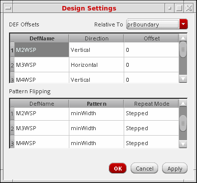
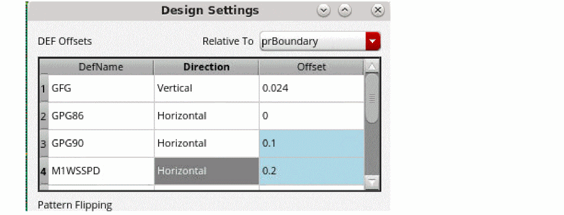
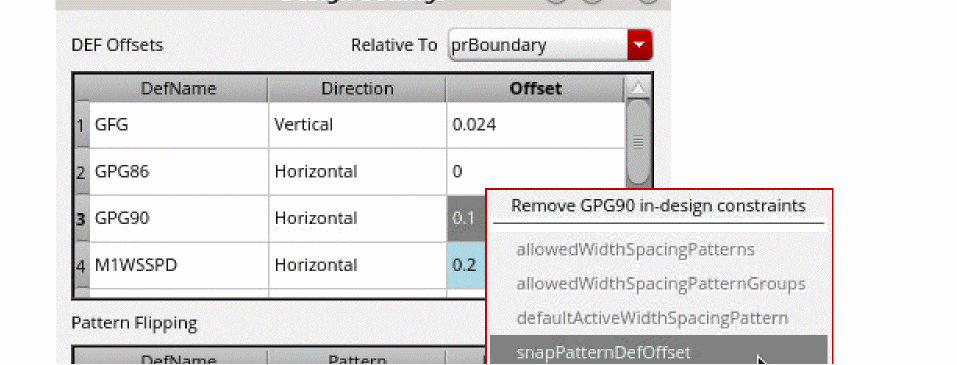

Choosing the Global Grid Settings
To specify the repeat mode, DEF offsets, and the offset reference for the WSSPDefs in the design:
-
Click the Design icon on the toolbar in the Track Pattern assistant.
The Design Settings form appears.
 - Choose whether the DEF Offsets are Relative To prBoundary or Origin from the drop-down menu.
-
For each WSSPDef in the DEF Offsets table, enter the offset in the Offset column.
For cellview snap pattern offset constraint, the offset is displayed in light blue.
You can delete the constraint from the context-sensitive menu. - For each Pattern in the Pattern Flipping table, choose the Repeat Mode for the global grid as one of the following: Stepped, Flipped Odd, or Flipped Even. Unset restores this value to the global grid default.
- Click OK or Apply to set the values.
Related Topics
Launching the Track Pattern Assistant
Track Pattern Assistant Toolbar
Return to top